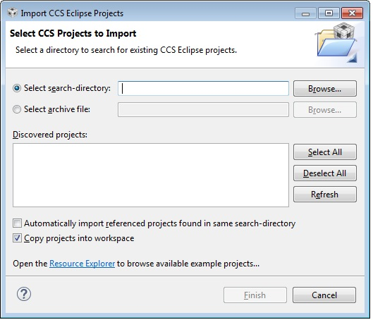

Wi-SUN Stack Quick Start Guide¶
This section serves as a road map for users developing applications and products using the TI SimpleLink CC13xx wireless MCU platform for Wi-SUN applications. Whether a seasoned developer or just getting started, TI has created a variety of resources to simplify development on the CC13xx platform. These resources will enhance your experience with the SimpleLink Wi-SUN from the out-of-the-box demo to production.
Using Wi-SUN Projects with CCS¶
Importing Wi-SUN projects into CCS will also import a README.md that
details the example application design, steps on running the example, and how
each example works.
For more details on TI Wi-SUN Stack example application please see the Wi-SUN Stack User’s Guide.
Import Project Using Resource Explorer¶
A quick and easy way to start working with the SDK is to use the TI Resource Explorer in CCS.
This section describes how to import and build an existing project and references the node project. This project is an example for a Wi-SUN FAN router node. All of Wi-SUN projects included in the development kit have a similar structure.
Open the CCS IDE from the Start Menu.
Create a workspace.
Attention
Ensure that the CCS workspace path does not contain a whitespace.
Import a CCS Project using Resource Explorer
Open Resource Explorer (if not open already) View -> Resource Explorer - Navigate to the CCS folder for your chosen example: Software -> SimpleLink CC13xx/CC26xx SDK -> Examples -> CC13xx_LAUNCHXL -> ti_wisunfan -> ns_node -> TI-RTOS -> TI Clang Compiler -> ns_node
Select the CCS Logo button to import the project into your workspace.
Attention
The import process will also install the SimpleLink CC13xx/CC26xx SDK if a local version does not exist. You must accept the End User License Agreement to proceeed.

Figure 1. Install SimpleLink CC13xx/CC26xx SDK¶
After the installation finishes, you must reopen CCS before importing the project.
If everything is successful, the project should appear in Resource Explorer.
Import Project Using Import Wizard¶
Open CCS
Choose Project -> Import CCS Projects… from the menu.
Select the Browse button in the Import CCS Projects dialog and select the the directory
<SDK_INSTALL_DIR>/examplesFigure 2. CCS Import Wizard¶
CCS discovers all examples supported, regardless of compiler.
Select the Wi-SUN Example Project you would like to use. In this example,
ns_node_CC1352R1_LAUNCHXL_tirtos_ccsis chosen. Click Finish to import thens_node_CC1352R1_LAUNCHXL_tirtos_ccsproject.
Import Project Using Workspace¶
This section describes how to open and build an existing project and references the Node project.
Open the IAR Embedded Workbench IDE from the Start Menu.
Open an IAR workspace project: File -> Open -> Workspace…
For this example, select” <SDK_INSTALL_DIR>\examples\rtos\CC13xx_LAUNCHXL\wisun\node\tirtos\iar\node_CC13xx.eww
This workspace file is for the node project. When selected, the files associated with the workspace become visible in the Workspace pane on the left side of the screen.
Build and Download Project¶
To build & download the node project:
Build the Node project:
Set the Node project as the active project. Make sure the Release project configuration is used.
Select Project -> Rebuild to build the node project.
Load the Node project:
Select Run -> Debug to download the node application.
Once the debugging session starts, click the red stop button
Before beginning execution, open a terminal window with the following settings:
UART Param
Default Values
Baud Rate
115200
Data length
8 bits
Parity
None
Stop bits
1 bit
Flow Control
None
When the debugging session opens, click the Green start button to start
execution. Continue on to the README.md for information about using the
example application.
Using Wi-SUN Projects with IAR¶
Importing a TI Wi-SUN FAN Stack project into IAR will also import a README.md that details the example application design, steps on running the example, and how each example works.
When building with IAR, it is recommended to enable all build messages. This can be done by right-clicking in the Build window and selecting “All” as shown below:

Figure 3. Enable All Build Messages¶
Warning
Standalone SysConfig tool must be installed in order to use all the IAR projects and
its location has to the same as specified by SYSCONFIG_ROOT.
The SysConfig standalone package can be found here: SysConfig Standalone Installer Download Page.
IAR One-Time Configuration¶
Below you can see how to add and enable the SDK-global argument variables. This is necessary before importing any project.
Figure 4. Select Configure Custom Argument Variables from the Tools menu¶
Figure 5. Click on Import… with either the Workspace or Global namespace selected. For Global, the imported values will persist for other projects also.¶

Figure 6. Find the Custom Argument Variables file under
<SDK root>/tools/iar¶Figure 7. Success! Change these paths if you have installed in a different location.¶
Note
If you have imported the global
<SDK_INSTALL_DIR>/tools/iar/SIMPLELINK_CC13XX_CC26XX_SDK.custom_argvars,
then the examples from the older SDKs will fail to build.
Import Project Using Workspace¶
This section describes how to open and build an existing project and references
the ns_node project.
Open the IAR Embedded Workbench IDE from the Start Menu.
Open an IAR workspace project: File -> Open -> Workspace…
For this example, select <SDK_INSTALL_DIR>\examples\rtos\|LP|\ti_wisunfan\ns_node\tirtos\iar\ns_node_<LP>tirtos_iar.template.eww
This will prompt you to select a folder location as a workspace for the project. It’s important to select an empty folder.
Build and Download Project¶
To build & download the node project:
Build the Node project:
Set the Node project as the active project. Make sure the Release project configuration is used.
Select Build to build the node project.
Load the Node project:
Select Debug to download the node application.
Once the debugging session starts, click the red stop button
Before beginning execution, open a terminal window with the following settings:
UART Param
Default Values
Baud Rate
115200
Data length
8 bits
Parity
None
Stop bits
1 bit
Flow Control
None
When the debugging session opens, click the start button to start
execution. Continue on to the README.md for information about using the
example application.
Running the Demo¶
For information on running any of the Wi-SUN example applications please refer
to the README.md imported with the example application.
When using the example in network processor mode, a host device running TI Wi-SUN FAN pySpinel scripts is needed. A description for setting this up is found in the TI Wi-SUN FAN pySpinel GitHub repo.
Developing a New Wi-SUN Based Application¶
The develop track can be summarized with the following steps:
Download the Simplelink SDK The SimpleLink CC13XX CC26XX SDK contains the code neccessary to start developing a Wi-SUN application. The stack library code implements the Wi-SUN stack, and the various example projects use the stack library to implement applications. These examples should be considered as starting points for end product design.
Get Familiar with the User’s Guide This User’s Guide is meant to be used alongside the example projects when developing an end product. It contains documentation on the stack architecture, APIs and suggestions for developing applications. To jump to the Table of Contents, click here: Wi-SUN Stack User’s Guide.
Select an Example Project The Wi-SUN includes a basic set of projects to use as a starting point for development of your custom application. TI recommends that users start their development of project with the Border Router and Router Node example applications. For more details on these and all other included projects, see the Wi-SUN Stack User’s Guide.
Begin Development with an IDE An Integrated Development Environment (IDE) can be set up to make it easier to browse through the relevant projects and view code. All embedded software is developed using TI’s Code Composer Studio on a Windows 10 or later PC.
Troubleshooting Help While developing your custom application, you may run into issues that require the use of a debugger. The Wi-SUN Stack User’s Guide provides help with configuring your debugger and understanding common problems. If you are still having problems after reading through the Debugging chapter, see the Getting Support track for more options.
Enhance Your Project¶
The following resources are intended to take your product to the next level by leveraging TI’s web-based collateral. Additional resources found in these pages include application-specific source code examples and complete sub-system designs.
TI Designs™ http://www.ti.com/tidesigns Examples of system designs containing complete hardware and software examples.
Application Notes You can find a number of application notes on each device page on ti.com.
Getting Support¶
E2E Forums www.e2e.ti.com
A support community providing answers to questions relating to the TI Wi-SUN FAN Stack. You can browse questions from other developers or ask your own questions if you run into issues developing with the TI Wi-SUN FAN Stack.